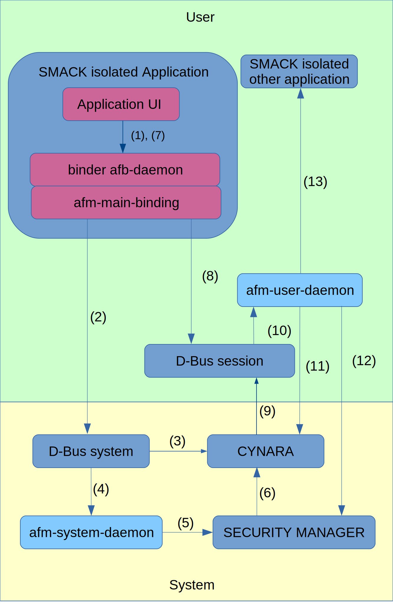

AGL framework overview
Foreword
This document describes what we intend to do. It may happen that our current implementation and the content of this document differ.
In case of differences, it is assumed that this document is right and the implementation is wrong.
Introduction
During the first works in having the security model of Tizen integrated in AGL (Automotive Grade Linux) distribution, it became quickly obvious that the count of components specific to Tizen to integrate was huge.
Here is a minimal list of what was needed:
- platform/appfw/app-installers
- platform/core/security/cert-svc
- platform/core/appfw/ail
- platform/core/appfw/aul-1
- platform/core/appfw/libslp-db-util
- platform/core/appfw/pkgmgr-info
- platform/core/appfw/slp-pkgmgr
But this list isn’t complete because many dependencies are hidden. Those hidden dependencies are including some common libraries but also many tizen specific sub-components:
- iniparser
- bundle
- dlog,
- libtzplatform-config
- db-util
- vconf-buxton
- …
This is an issue because AGL is not expected to be Tizen. Taking it would either need to patch it for removing unwanted components or to take all of them.
However, a careful study of the core components of the security framework of Tizen showed that their dependencies to Tizen are light (and since some of our work, there is no more dependency to tizen). Those components are :
- cynara
- security-manager
- D-Bus aware of cynara
Luckily, these core security components of Tizen are provided by meta-intel-iot-security, a set of yocto layers. These layers were created by Intel to isolate Tizen specific security components from the initial port of Tizen to Yocto. The 3 layers are providing components for:
- Implementing Smack LSM
- Implementing Integrity Measurement Architecture
- Implementing Tizen Security Framework
The figure below shows the history of these layers.
We took the decision to use these security layers that provide the basis of the Tizen security, the security framework.
For the components of the application framework, built top of the security framework, instead of pulling the huge set of packages from Tizen, we decided to refit it by developing a tiny set of components that would implement the same behaviour but without all the dependencies and with minor architectural improvements for AGL.
These components are :
- afm-system-daemon
- afm-user-daemon
They provides infrastructure for installing, uninstalling, launching, terminating, pausing and resuming applications in a multi user secure environment.
A third component exists in the framework, the binder afb-daemon. The binder provides the easiest way to provide secured API for any tier. Currently, the use of the binder is not absolutely mandatory.
This documentation explains the framework created by IoT.bzh by rewriting the Tizen Application Framework. Be aware of the previous foreword.
Overview
The figure below shows the major components of the framework and their interactions going through the following scenario:
- APPLICATION installs an other application and then launch it.

Let follow the sequence of calls:
-
APPLICATION calls its binder to install the OTHER application.
-
The binding afm-main-binding of the binder calls, through D-Bus system, the system daemon to install the OTHER application.
-
The system D-Bus checks wether APPLICATION has the permission or not to install applications by calling CYNARA.
-
The system D-Bus transmits the request to afm-system-daemon.
afm-system-daemon checks the application to install, its signatures and rights and install it.
-
afm-system-daemon calls SECURITY-MANAGER for fulfilling security context of the installed application.
-
SECURITY-MANAGER calls CYNARA to install initial permissions for the application.
-
APPLICATION call its binder to start the nearly installed OTHER application.
-
The binding afm-main-binding of the binder calls, through D-Bus session, the user daemon to launch the OTHER application.
-
The session D-Bus checks wether APPLICATION has the permission or not to start an application by calling CYNARA.
-
The session D-Bus transmits the request to afm-user-daemon.
-
afm-user-daemon checks wether APPLICATION has the permission or not to start the OTHER application CYNARA.
-
afm-user-daemon uses SECURITY-MANAGER features to set the security context for the OTHER application.
-
afm-user-daemon launches the OTHER application.
This scenario does not cover all the features of the frameworks. Shortly because details will be revealed in the next chapters, the components are:
-
SECURITY-MANAGER: in charge of setting Smack contexts and rules, of setting groups, and, of creating initial content of CYNARA rules for applications.
-
CYNARA: in charge of handling API access permissions by users and by applications.
-
D-Bus: in charge of checking security of messaging. The usual D-Bus security rules are enhanced by CYNARA checking rules.
-
afm-system-daemon: in charge of installing and uninstalling applications.
-
afm-user-daemon: in charge of listing applications, querying application details, starting, terminating, pausing, resuming applications and their instances for a given user context.
-
afb-binder: in charge of serving resources and features through an HTTP interface.
-
afm-main-binding: This binding allows applications to use the API of the AGL framework.
Links between the “Security framework” and the “Application framework”
The security framework refers to the security model used to ensure security and to the tools that are provided for implementing that model.
The security model refers to how DAC (Discretionary Access Control), MAC (Mandatory Access Control) and Capabilities are used by the system to ensure security and privacy. It also includes features of reporting using audit features and by managing logs and alerts.
The application framework manages the applications:
- installing
- uninstalling
- starting
- pausing
- listing
- …
The application framework uses the security model/framework to ensure the security and the privacy of the applications that it manages.
The application framework must be compliant with the underlying security model/framework. But it should hide it to the applications.
The security framework
The implemented security model is the security model of Tizen 3. This model is described here.
The security framework then comes from Tizen 3 but through the meta-intel. It includes:
- Security-Manager
- Cynara
- D-Bus compliant to Cynara.
Two patches are applied to the security-manager. The goal of these patches is to remove specific dependencies with Tizen packages that are not needed by AGL. None of these patches adds or removes any behaviour.
In theory, the security framework/model is an implementation details that should not impact the layers above the application framework.
The security framework of Tizen provides “nice lad” a valuable component to scan log files and analyse auditing. This component is still in development.
The application framework
The application framework on top of the security framework provides the components to install and uninstall applications and to run it in a secured environment.
The goal is to manage applications and to hide the details of the security framework to the applications.
For the reasons explained in introduction, we did not used the application framework of Tizen as is but used an adaptation of it.
The basis is kept identical:
- The applications are distributed in a digitally signed container that must match the specifications of widgets (web applications).
This is described by the technical recommendations widgets and widgets-digsig of the W3 consortium.
This model allows:
- The distribution of HTML, QML and binary applications.
- The management of signatures of the widget packages.
This basis is not meant as being rigid and it can be extended in the future to include for example incremental delivery.